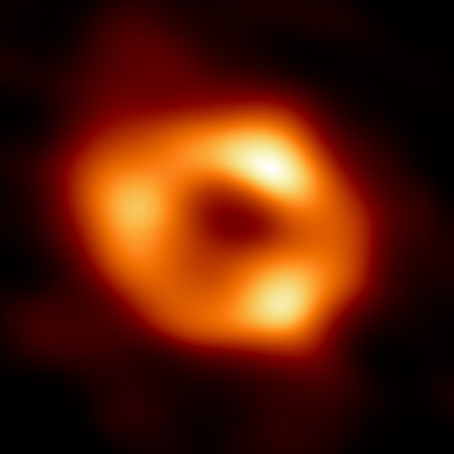

On Astrophysics, Communities and Python
Cristián
maureira.dev
@cmaureir


Hello everyone 👋
during this talk I will lie to you
(...at least a couple of times)
...but my objective is to /hopefully/
give you new information
for your own benefit


First Steps


Let's start with a motivational quote:
"You will never be able to do that"
Changing your life direction
only needs a spark of curiosity
The most drastic change


Quantum Mechanics
Quantum Mechanics (in reality)


Globular Clusters

Messier 2 - HST - 55k ly away, 150k stars, 13 Gyr old (Wikipedia)
- Ancient structures in the Universe
- Among the densest stellar systems
- Many theories on the formation
- Multiple populations!
- Galactic Archaeology (Laboratories)
and guess what?
🔥You can simulate them:🔥
The N-body problem
This is amazing!!!!

Where is this going?
⚠️
Mathematical formulas incoming
1-body problem

1-body problem

2-body problem (1/2)
2-body problem (2/2)


https://en.wikipedia.org/wiki/Two-body_problem - Public Domain Animations
3-body problem (1/2)
(Neither the book nor the TV show 🙄)
⍧ℍ⍲⌾⎎
3-body problem (2/2)

Stationary centre of mass
CC BY-SA 4.0 - Dnttllthmmnm (Wikipedia)
Periodic solutions
CC BY-SA 4.0 - Perosello (Wikipedia)
$N-$body problem
Philosophiæ Naturalis Principia Mathematica (Isaac Newton)
1687 😱
but...
What happens when two bodies are very close?
$N-$body problem - binaries (1/2)
Handling binaries is non-trivial,
and without it the simulation is broken.
Hot-fix: Softening $\color{orange}{\epsilon}$ to the rescue!
with this...
Can the simulation run forever?
$N-$body problem - core collapse (1/2)

$N-$body problem - core collapse (2/2)

Not properly handling this
will create problems
The energy of the binaries is crucial for the cluster
If it gets lost, the cluster is lost
and remember!
Without energy conservation, nothing makes sense
most of the time*
uhm, again...🫤 Where is this going?
this has everything to do with Python
Let's replace bodies with people
1-person problem
(this topic is too dense and complex for this talk)
2-person problem
/Most/ relationships between two people are somewhat predictable based on experience
3-person problem
Adding a third person will most likely change the outcome of a 2-person interaction, adding a bit of "chaos".
N-person problem
- The evolution of this group of people is not analytically exact, and we don't know what it will look like in the future
- Heated binaries/interactions can reduce the energy of the system/group until the system/group doesn't make sense anymore
- You can ignore/soften those interactions, but at some point they need to be addressed.
How do we prevent the collapse of our cluster/community?
...and even worse
Clusters are embedded in Galaxies
Let's talk about our dear Galaxy
(The Python Ecosystem)
Python is Ⓦ𝐄𝔦ℝＤ and hard!
>>> a = 256; b = 256
>>> a is b
True
>>> a = 257; b = 257
>>> a is b
False
>>> for i in range(9): pass
>>> i
8
>>> [_ for j in range(9)]
>>> j
Traceback (most recent call last):
File "<python-input-15>", line 1, in <module>
j
^
NameError: name 'j' is not defined
>>> 0.1 + 0.2 == 0.3
False
>>> l = []
>>> l.append(l)
>>> l
[[...]]
>>> *s,='abcde'
>>> s
["a", "b", "c", "d", "e"]
>>> n = 81
>>> n&~-n<1
True
x,y=[6 ,11]\
,[ 48,67 ];s\
=[ x for x \
in vars ( )]\
;b= vars( )[s[ x[
0]]] ;k= list( (b.
__dict__ .keys (
) )) ;g= getattr(b
,k[x[1]*2]);m=g(
b,k[y[1]+1]);l=g\
(b ,k
[x [1
]* 3] ); i=\
g( b, k[ x[
1] *6]);p =g\
(b ,k[y[0 ]-
x[0]]) ;a=g(g(b,k
[x[0]] )("".join(
m( g(b,k[ x[
0] //2+x[ 1]
]) ,(m( g(
b, k[y[ 0]
-1 ]) ,g(b,k[x [1]+
y[ 1] +1])([*[ g(b,
k[ y[0]-1]) (y)] *3
], [0,x[0], 0])) ))
)) ,"". join(m(g(b
,k [x[0 ]//2+x[1]]
), (m (g
(b ,k [y
[0 ]- 1]
), g( b,
k[x[1] +y[1 ]+1]
)([*[g (b,k [y[0
]- 1])( y) ]*4],[x[0]*- 3,-1
,x [0]* -2 ,x[0]//2]))) )));
p(i((1/5**.5)*(((1+5**.5)/2)**(i(a[1])+1)-((1
-5**.5)/2)**(i(a[1])+1)))) if l(a)>1 else p(1)
# Most reproducible winner: https://pyobfusc.com/#winners
but...
Python is more than a programming language
and that's why I like it


Me close to San Pedro de Atacama
Milky Way from the Paranal Observatory - Juan Carlos Muñoz-Mateos/ESO

Sagittarius A* imaged by the Event Horizon Telescope in 2017, released in 2022
(European Southern Observatory - CC BY-SA 4.0)
The Python Binary System


The Python Software Foundation (PSF)
- ✅ US 501(c)(3) non-profit
- ✅ Promote, protect, and advance the language
- ✅ Licenses to ensure public and free distribution
- ✅ Hold intellectual property
- ✅ Infrastructure, staff, grants, fundraising, and more!
- ❌ Is not in charge of all the communities
- ❌ Doesn't mediate conflicts in communities
- ❌ Doesn't approve features for the language
- ❌ Doesn't vote on PEPs or core developers
Why staying in our Galaxy?
NASA's Juno planetary probe - NASA/Scott Andrews
Galaxy Interactions
NASA/Goddard Space Flight Center and the Advanced Visualization Laboratory at the National Center for Supercomputing Applications, B. Robertson, L. Hernquist
We have been interacting with many galaxies ecosystems
C Programmers improving CPython
(Apparently 'C' stands for 'Canonical' now)
#include <stdio.h>
int main(void) {
int numbers[] = {1, 2, 3, 4, 5};
int total = 0;
for (int i = 0; i < 5; i++) {
total += numbers[i];
}
printf("Total: %d\n", total);
return 0;
}
numbers = [1, 2, 3, 4, 5]
total = 0
for n in numbers:
total += n
print(f"Total: {total}")
C++ keeps getting our inspiration
#include <print>
#include <map>
#include <ranges>
int main() {
std::map<std::string, int> ages{
{"Guido", 70}, {"Bjarne", 75}};
for (auto& [name, age] : ages)
std::println("{} is {}", name, age);
auto squares = std::views::iota(1, 6)
| std::views::transform([](int x) {
return x * x;
});
std::print("{}", squares);
}
(std::print after only 50 years... yay)
ages = {"Guido": 70, "Bjarne": 75}
for name, age in ages.items():
print(f"{name} is {age}")
squares = [x * x for x in range(1, 6)]
print(squares)
Ruby was once a direct competitor
class Greeter
def initialize(name)
@name = name
end
def greet
"Hello, #{@name}!"
end
end
squares = [1, 2, 3].map { |x| x ** 2 }
puts Greeter.new("PyCon GR").greet
class Greeter:
def __init__(self, name):
self.name = name
def greet(self):
return f"Hello, {self.name}!"
squares = [x ** 2 for x in [1, 2, 3]]
print(Greeter("PyCon GR").greet())
Julia took many ideas
function fib(n)
n < 2 && return n
return fib(n - 1) + fib(n - 2)
end
squares = [x^2 for x in 1:10]
evens = filter(iseven, 1:10)
println("fib(10) = $(fib(10))")
def fib(n):
if n < 2: return n
return fib(n - 1) + fib(n - 2)
squares = [x**2 for x in range(1, 11)]
evens = [x for x in range(1, 11) if x % 2 == 0]
print(f"fib(10) = {fib(10)}")
(...but arrays start at 1)
and you should boost this too!
for example
Rust code
struct Point {
x: f64,
y: f64,
}
impl Point {
fn norm(&self) -> f64 {
(self.x.powi(2) + self.y.powi(2)).sqrt()
}
}
fn main() {
let p = Point { x: 3.0, y: 4.0 };
let names = vec!["Maria", "José"];
for name in &names {
println!("Hello, {name}!");
}
println!("norm = {}", p.norm());
}
from dataclasses import dataclass
import math
@dataclass
class Point:
x: float
y: float
def norm(self) -> float:
return math.hypot(self.x, self.y)
p = Point(3.0, 4.0)
names = ["Maria", "José"]
for name in names:
print(f"Hello, {name}!")
print(f"norm = {p.norm()}")
Where is Rust? (1/2)

Where is Rust? (2/2)
rg, fd, ... in coreutils

Rust shaping Python (1/2)
src/lib.rs
use pyo3::prelude::*;
#[pymodule]
mod fastmath {
use pyo3::prelude::*;
#[pyfunction]
fn add(a: i64, b: i64) -> i64 {
a + b
}
}
$ pip install maturin
$ maturin new --bindings pyo3 fastmath
$ cd fastmath
$ maturin develop
>>> import fastmath
>>> fastmath.add(2, 3)
5
Rust shaping Python (2/2)
Tools
- uv, ruff, ty (Astral)
- pixi (prefix.dev)
- maturin + PyO3
Libraries
- pydantic-core (Pydantic)
- Polars
- tokenizers, safetensors (Hugging Face)
- tiktoken (OpenAI)
- cryptography, orjson
and Python is also shaping Rust
- crates.io/crates/rpds - 4.4M (90 days) - 19.5M downloads
- jsonschema → rpds-py - ...
470M (30 days) 😵
Established relationship

Rebecca Rumbul & Deb Nicholson: "Fireside Chat - Stewarding Rust & Python" | RustConf 2026
Rust for CPython initiative
github.com/Rust-for-CPython
What can you do?
(If you want, no pressure!)
Learn the forbidden topics
- 🧪 Create silly modules
- 🔧 Solve mundane problems
- 🔀 Do strange languages interactions
- 💡 Bring ideas from one language to another
- 🎤 Modify the interpreter and give talks!
Help your local community N-person system
- 👥 Show up to meetups, and bring a friend
- ⚡ Give a lightning talk: 5 minutes is enough for a first one
- 🏢 Host a meetup at your company or university
- 🙌 Volunteer: registration, social media, website
- 🏃 Run a beginners' workshop or a sprint
- 🌍 Create content in your own language: Καλή ιδέα!
Help the Python Ecosystem Galaxy
- 🛠️ Contribute to open source: docs, triage, reviews, not only code
- 📖 Translate the Python documentation
- 🗳️ Become a PSF member and vote
- 🎪 Volunteer at PyCons and EuroPython
- 💜 Support PyLadies, Python Pizza, Django Girls, ...
- 💶 Sponsor projects, or convince your employer to
Encourage ecosystem galaxy interactions
- 🚪 Go to another language's meetup or conference
- 🤝 Co-organize joint meetups: "Python + Rust night"
- 🌐 Attend multi-language events: FOSDEM, local tech weeks
- 🔗 Contribute to bindings: PyO3, pybind11, PySide, juliacall
- ☂️ Join umbrella organizations: NumFOCUS, OSI, local FOSS groups
- 📨 Invite speakers from other communities to your events
...and many other ideas you might have!
...but now
💀 The Lies
💀First Lie: Post-Newtonian corrections (1/2)
- 1PN: relativistic correction, proportional to $1/c^{2}$
- 2PN: conservative relativistic correction, proportional to $1/c^{4}$
- 2.5PN: dissipative correction, proportional to $1/c^{5}$: orbital energy and angular momentum loss through gravitational-wave emission.
- (3PN, 3.5PN, 4PN, 4.5PN, ...)
💀First Lie: Post-Newtonian corrections (2/2)
for (int k = 0; k < 3; k++)
{
// Precession (PN1)
pn1[k] = G * m2 * r2inv * (nv[k] * (-v1_2 - 2 * v2_2 + 4 * v1v2 + 1.5 * (nv2_2) + 5 * (G * m1 * rinv) + 4 * (G
* m2 * rinv)) + vv[k] * (4*nv1 - 3*nv2 ));
pn1[k] *= c2inv;
// Precession Correction (PN2)
pn2[k] = G * m2 * r2inv * (nv[k] * (-2 * v2_4 + 4 * v2_2 * v1v2 - 2 * v1v2_2 + 1.5 * v1_2 * nv2_2 + 4.5 * v2_2 * nv2_2 - 6 * v1v2 * nv2_2 - 1.875 *
nv2_4 + (G * m1 * rinv) * (-3.75 * v1_2 + 1.25 * v2_2 - 2.5 * v1v2 + 19.5 * nv1_2 - 39 * nv1 * nv2 + 8.5 * nv2_2) + G * m2 *
rinv * (4 * v2_2 - 8 * v1v2 + 2 * nv1_2 - 4 * nv1 * nv2 - 6 * nv2_2)) + vv[k] * (v1_2 * nv2 + 4 * v2_2 * nv1 - 5 * v2_2 * nv2 - 4 * v1v2 * nv1 +
4 * v1v2 * nv2 - 6 * nv1 * nv2_2 + 4.5 * nv2_3 + (G * m1 * rinv) * (-15.75 * nv1 + 13.75 * nv2) + G * m2 * rinv * (-2 * nv1 - 2 *
nv2))) + G3 * m2 * r4inv * nv[k] * (-14.25 * m1_2 - 9 * m2_2 - 34.5 * m1 * m2);
pn2[k] *= c4inv;
// GW Decay (PN2.5)
pn25[k] = 0.8 * G2 * m1 * m2 * r3inv * (vv[k] * (-(vv[k] * vv[k]) + 2 * G * m1 * rinv - 8 * G * m2 * rinv) + nv[k] * (nv1 - nv2) * (3 * vv[k] *
vv[k] - 6 * G * m1 * rinv + 52.0/3.0 * G * m2 * rinv));
pn25[k] *= c5inv;
// Derivative Precession (dPN1)
dpn1[k] = G * m2 * (-(vv[k] * v1_2 * r3inv + 2 * nv[k] * v1a1 * r2inv + 3 * nv[k] * v1_2 * (nv2 - nv1) * r3inv) -2 * (vv[k] * v2_2 * r3inv + 2 *
nv[k] * v2a2 * r2inv + 3 * nv[k] * v2_2 * (nv2 - nv1) * r3inv) + 4 * (vv[k] * v1v2 * r3inv + nv[k] * (a1v2 + a2v1) * r2inv + 3 * nv[k] *
v1v2 * (nv2 - nv1) * r3inv) + 1.5 * (vv[k] * nv2_2 * r3inv + 2 * nv[k] * nv2 * (r * na2 + v1v2 - v2_2) * r3inv) + 5 * nv[k] * (nv2_2 *
(nv2 - nv1)) * r3inv + G * (vv[k] * r4inv + 4 * nv[k] * (nv2 - nv1) * r4inv) * (5 * m1 + 4 * m2) + 4 * nv1 * r2inv * aa[k] + 3 * nv2 *
r2inv * zaa[k] + 4 * (v1_2 - v1v2 + r * na1 + 3 *(nv2 - nv1) * nv1) * r3inv * vv[k] + 3 * (v1v2 - v2_2 + r * na2 + 3 * (nv2 - nv1) * nv2) *
r3inv * zvv[k]);
dpn1[k] *= c2inv;
// Derivative Precession Correction (dPN2)
dpn2[k] = G * m2 * (-2 * (vv[k] * v2_4 * r3inv + nv[k] * (4 * v2_2 * a2v2) * r2inv + 3 * nv[k] * (v2_4 * (nv2 - nv1)) * r3inv) + 4 *(vv[k] * v2_2 *
v1v2 * r3inv + 2 * nv[k] * (v2a2 * v1v2) * r2inv + nv[k] * (v2_2 * (a1v2 + v1a2)) * r2inv * 3 * nv[k] * (v2_2 * v1v2 * (nv2 - nv1)) *
r3inv) - 2 * (vv[k] * v2v1_2 * r3inv + 2 * nv[k] * (v1v2 * (a1v2 + a2v1)) * r2inv + 3 * nv[k] * (v1v2_2 * (nv2 - nv1)) * r3inv) + 1.5 *
(vv[k] * (v1_2 * nv2_2) * r3inv + 2 * nv[k] * (v1a1 * nv2_2) * r2inv + 2 * nv[k] * (v1_2 * nv2) * r2inv * (na2 + (v1v2 - v2_2) * rinv) + 5 *
nv[k] * (v1_2 * nv2_2) * r3inv * (nv2 - nv1)) + 4.5 * (vv[k] * (v2_2 * nv2_2) * r3inv + 2 * nv[k] * (v2a2 * nv2_2) * r2inv + 2 * nv[k] *
(v2_2 * nv2) * r2inv * (na2 + (v1v2 - v2_2) * rinv) + 5 * nv[k] * (v2_2 * nv2_2) * r3inv * (nv2 - nv1)) -6 * (vv[k] * (v1v2 * nv2_2) *
r3inv + nv[k] * ((a1v2 + v1a2) * nv2_2) * r2inv + 2 * nv[k] * (v1v2 * nv2) * r2inv * (na2 + (v1v2 - v2_2) * rinv) + 5 * nv[k] * (v1v2 *
nv2_2 * (nv2 - nv1)) * r3inv) - 1.875 * (vv[k] * nv2_4 * r3inv + 4 * nv[k] * nv2_3 * r2inv * (na2 + (v1v2 - v2_2) * rinv) + 7 * nv[k] *
nv2_4 * r3inv * (nv2 - nv1)) + G * m1 * (-3.75 * (vv[k] * v1_2 * r4inv + 2 * nv[k] * v1a1 * r3inv + 4 * nv[k] * (v1_2 * (nv2 - nv1)) *
r4inv) + 1.25 * (vv[k] * v2_2 * r4inv + 2 * nv[k] * v2a2 * r3inv + 4 * nv[k] * v2_2 * (nv2 - nv1) *r4inv) - 2.5 * (vv[k] * v1v2 *
r4inv + nv[k] * (a1v2 + v1a2) * r3inv + 4 * nv[k] * v1v2 * (nv2 - nv1) * r4inv) + 19.5 * (vv[k] * nv1_2 * r4inv + 2 * nv[k] * nv1 *
r3inv * (na1 + (v1_2 - v1v2) * rinv) + 6 * nv[k] * (nv1_2 * (nv2 - nv1)) * r4inv) - 39.0 * (vv[k] * nv1 * nv2 * r4inv + nv[k] * r3inv *
(nv1 * na2 + nv2 * na1 + (nv1 * (v1v2 - v2_2) * rinv) + (nv2 * (v1_2 - v1v2) * rinv)) + 6 * nv[k] * nv1 * nv2 * r4inv * (nv2 - nv1)) +
8.5 * (vv[k] * nv2_2 * r4inv + 2 * nv[k] * nv2 * r3inv * (na2 + (v1v2 - v2_2) * rinv) + 6 * nv[k] * (nv2_2 * (nv2 - nv1)) * r4inv)) +
G * m2 * (4.0 * (vv[k] * v2_2 * r4inv + 2 * nv[k] * v2a2 * r3inv + 4 * nv[k] * (v2_2 * (nv2 - nv1)) * r4inv) - 8.0 * (vv[k] * v1v2 * r4inv +
nv[k] * (a1v2 + v1a2) * r3inv + 4 * nv[k] * (v1v2 * (nv2 - nv1)) * r4inv) + 2.0 * (vv[k] * nv1_2 * r4inv + 2 * nv[k] * nv1 * r3inv *
(na1 + (v1_2 * v1v2) * rinv) + 6 * nv[k] * (nv1_2 * (nv2 - nv1)) * r4inv) - 4.0 * (vv[k] * nv1 * nv2 * r4inv + nv[k] * r3inv * (nv1 *
na2 + nv2 * na1 + (nv1 * (v1v2 - v2_2)) * rinv + (nv2 * (v1_2 * v1v2)) * rinv) + 6 * nv[k] * nv1 * nv2 * r4inv * (nv2 - nv1)) - 6.0 *
(vv[k] * nv2_2 * r4inv + 2 * nv[k] * nv2 * r3inv * (na2 + (v1v2 - v2_2) * rinv) + 6 * nv[k] * (nv2_2 * (nv2 - nv1)) * r4inv)) + aa[k] *
v1_2 * nv2 * r2inv + vv[k] * (2 * v1a2 * nv2 * r2inv + v1_2 * r2inv * (na2 + (v1v2 - v2_2) * rinv + 3 * nv2 * rinv * (nv2 - nv1))) + 4.0 *
aa[k] * v2_2 * nv1 * r2inv + 4 * vv[k] * (2 * v2a2 * nv1 * r2inv + v2_2 * r2inv * (na1 + (v1_2 - v1v2) * rinv + 3 * nv1 * rinv * (nv2 -
nv1))) - 5.0 * aa[k] * v2_2 * nv2 * r2inv - 5 * vv[k] * (2 * v2a2 * nv2 * r2inv + v2_2 * r2inv * (na2 + (v1v2 - v2_2) * rinv + 3 * nv2 *
rinv * (nv2 - nv1))) - 4.0 * aa[k] * v1v2 * nv1 * r2inv - 4 * vv[k] * ((a1v2 + v1a2) * nv1 * r2inv + v1v2 * r2inv * (na1 + (v1_2 - v1v2) *
rinv + 3 * v1v2 * nv1 * rinv * (nv2 - nv1))) + 4.0 * aa[k] * v1v2 * nv2 * r2inv + 4 * vv[k] * ((a1v2 + v1a2) * nv2 * r2inv + v1v2 * r2inv *
(na2 + (v1v2 - v2_2) * rinv + 3 * v1v2 * nv2 * rinv * (nv2 - nv1))) - 6 * aa[k] * nv1 * nv2_2 * r2inv - 6 * vv[k] * (nv2_2 * r2inv * (na1 +
(v1_2 - v1v2) * rinv) + 2 * nv1 * nv2 * r2inv * (na2 + (v1v2 - v2_2) * rinv) + 5 * nv1 * nv2_2 * r3inv * (nv2 - nv1)) + 4.5 * aa[k] * nv2_3 *
r2inv + 4.5 * vv[k] * (3 * nv2_2 * r2inv * (na2 + (v1v2 - v2_2) * rinv) + 5 * r * nv2_3 * r3inv * (nv2 - nv1)) + G * ((aa[k] * nv1 *
r3inv * vv[k] * (na1 * r3inv + (v1_2 - v1v2) * r4inv + 4 * nv1 * r4inv *(nv2 - nv1))) * (-15.75 * m1 - 2 * m2) + (aa[k] * nv2 *
r3inv + vv[k] * (na2 * r3inv + (v1v2 - v2_2) * r4inv + 4 * nv2 * r4inv * (nv2 - nv1))) * (13.75 * m1 - 2 * m2))) + G3 * m2 *
(-14.25 * m1_2 - 9 * m2_2 - 34.5 * m1m2) * (vv[k] * r5inv + 5 * nv[k] * (nv2 - nv1) * r5inv);
dpn2[k] *= c4inv;
// Derivative GW Decay (dPN2.5)
dpn25[k] = 0.8 * G2 * m1m2 * (-(aa[k] * vv[k] * vv[k]) * r3inv - 2 * vv[k] * r3inv * (v1a1 + v2a2 - v2a1 - v1a2) + 6 * vv[k] * r4inv * vv[k] *
vv[k] * (nv1 - nv2) + G * (2 * m1 - 8 * m2) * (aa[k] * r4inv + 4 * vv[k] * r5inv * (nv2 - nv1)) + 3 * (nv[k] * vv[k] * vv[k] * r3inv *
(na1 - na2 + (v1_2 + v2_2 - 2 * v1v2) * rinv) + 2 * nv[k] * (nv1 - nv2) * r3inv * (v1a2 + v2a2 - v2a1 - v1a2) - 5 * nv[k] * (vv[k] *
vv[k] * (nv1 - nv2) * (nv1 - nv2)) * r4inv) + G * (52.0/3.0 * m2 - 6 * m1) * (vv[k] * (nv1-nv2) * r5inv + nv[k] * r4inv * (na1 - na2 +
(v1_2 - 2 * v1v2 + v2_2) * rinv) - 6 *nv[k] * (nv2 - nv1) * (nv2 - nv1) * r5inv));
dpn25[k] *= c5inv;
}
💀Second Lie: The collapse is imminent but can be delayed
- Hard binaries: release kinetic energy into the cluster
- BH and NS: provide energy through dynamical interactions
- IMBHs: alter the central density profile, maybe preventing it?
- External tidal effects
💀Third Lie:
C++ runs the world, and a lot of Python projects are amazing thanks to C++
💀Final Lie:
The small contribution of stars
affects the Cluster evolution
The Cluster dynamics
will affect the Galaxy evolution
Thanks for being a star
in the Python Ecosystem
On Astrophysics, Communities and Python
Cristián Maureira-Fredes
maureira.dev
@cmaureir
cmaureir.github.io/pycongr2026_keynote